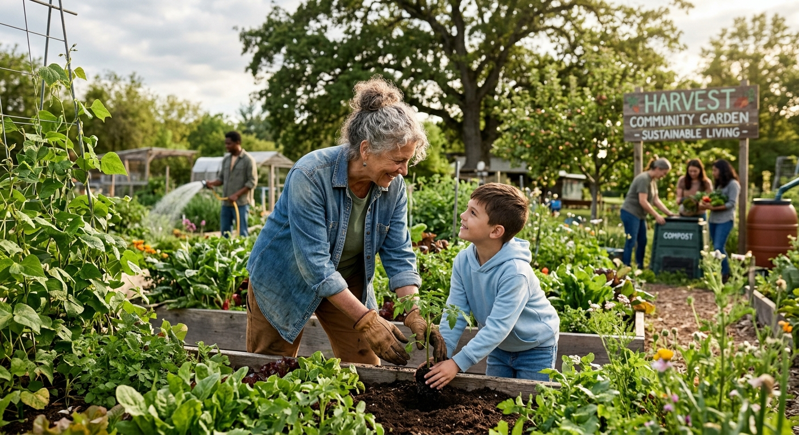
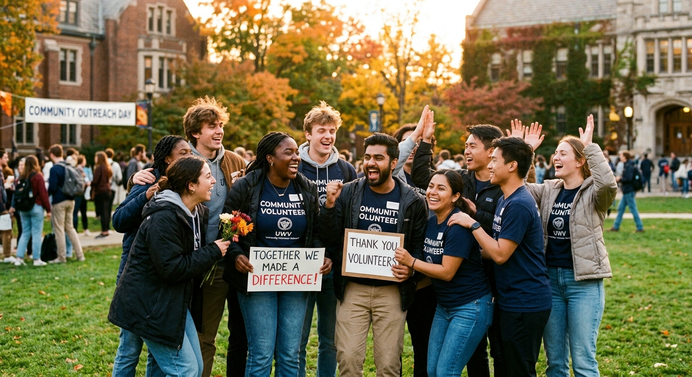
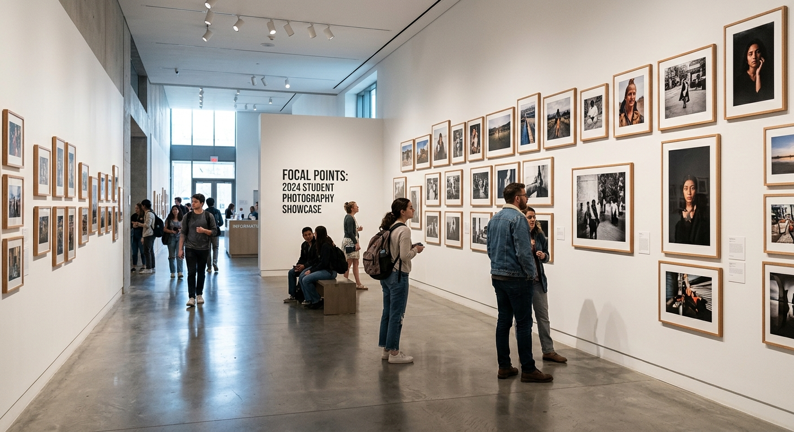
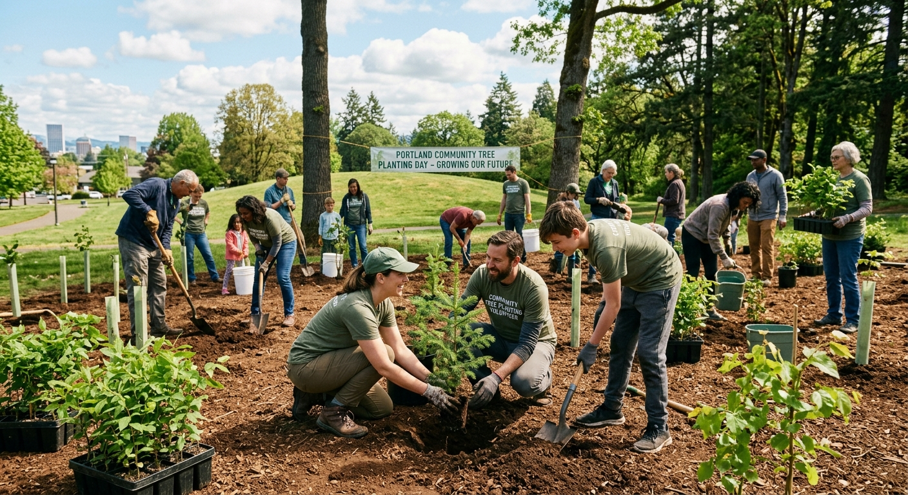
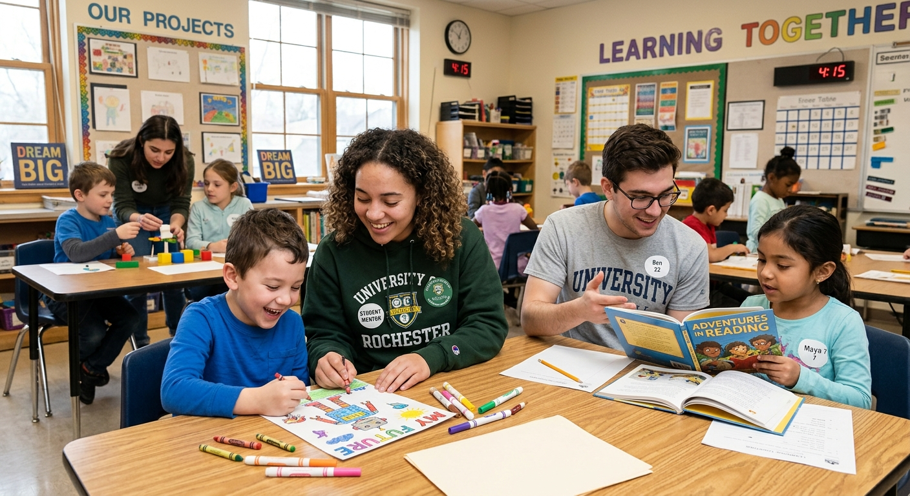
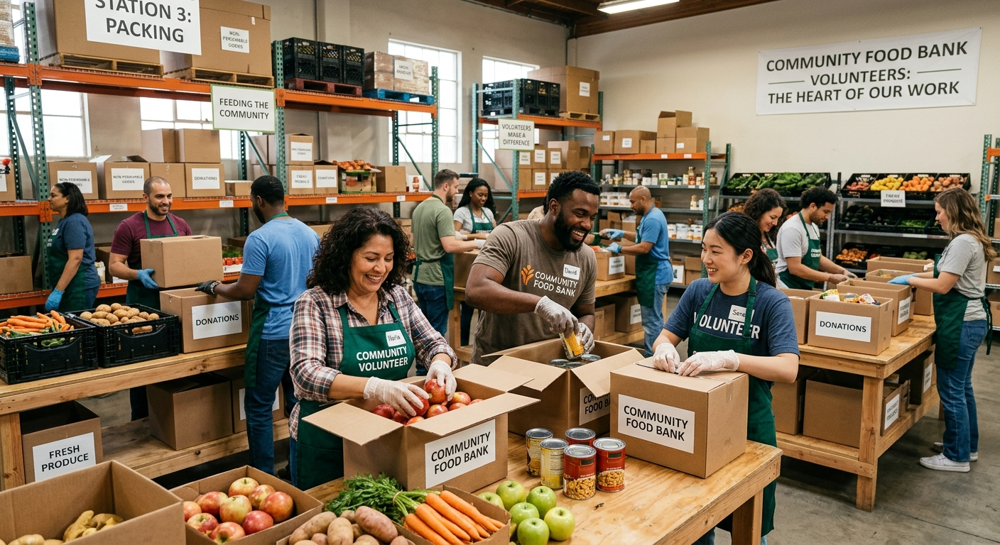
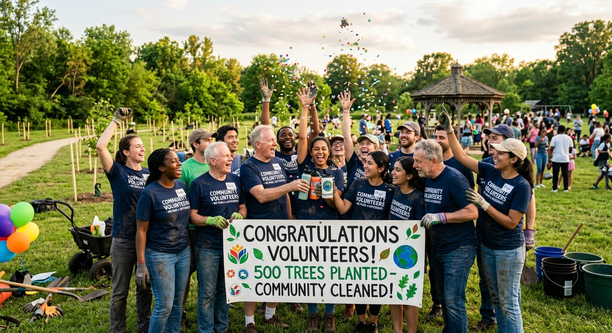

Tema
Voluntariado e Sustentabilidade
Fotografias que captem o impacto do voluntariado no desenvolvimento sustentável.

4 e 5 de dezembro de 2026
Ano Internacional dos Voluntários para o Desenvolvimento Sustentável

Fotografias que captem o impacto do voluntariado no desenvolvimento sustentável.

Exposição das obras finalistas no átrio da Reitoria da U.Porto.
Regulamento em preparação.
Informação sobre júri e prémios em atualização.




Reconhecimento do voluntariado de excelência
Reconhecimento de voluntários e projetos de destaque da U.Porto.
Critérios em atualização.
Sessão de partilha de experiências de voluntariado, com testemunhos de voluntários e organizações parceiras da U.Porto.
Detalhes em atualização.
Semana Solidária · U.Porto
Esta celebração faz parte da Semana Solidária U.Porto, de 21 a 26 de setembro de 2026.